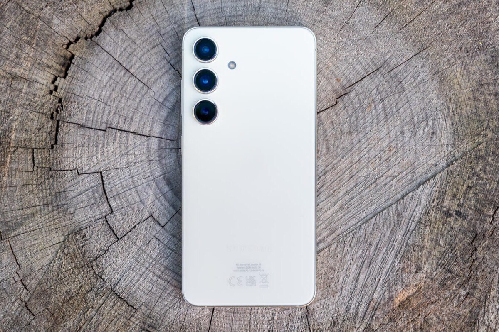

Apple no es la única que planea un móvil ultra-delgado.
2025 apunta a ser un año bastante movidito para la gama alta. Con la intención de revitalizar las ventas de la familia iPhone, Apple estaría planeando lanzar un iPhone 17 Air. Un modelo especialmente delgado para plantear una alternativa distinta tanto a los iPhone Pro como a los modelos estándar. Un iPhone más llamativo y de masas.
Según The Elec, Samsung se está planteando seguir sus pasos. La familia Samsung Galaxy S25 estaría bastante acotada con los tres clásicos modelos, pero no se descarta dotar al FE de una nueva identidad. Una en la que el diseño sería la principal baza.
Apunta la fuente coreana que Samsung planea producir 22 millones de unidades de la serie Galaxy S25, cifras similares a las vistas el año pasado. La producción de piezas para estos teléfonos comenzará este mismo mes, y se afirma que en su lanzamiento habrá tres modelos: S25, S25+ y S25 Ultra.
La clave y novedad está en un cuarto modelo que llegaría bastantes meses después. Samsung querría dar un vuelvo al concepto del FE, manteniendo el tamaño de pantalla en 6,7 pulgadas, pero poniendo el foco en el grosor.
Aún no se conoce cómo lograrán reducir al máximo dicho grosor, pero hacer una batería más delgada puede ser una de las claves para lograrlo. Este modelo está aún sin confirmar, pero pone sobre la mesa que el grosor puede ser uno de los puntos clave en la gama alta de 2025.